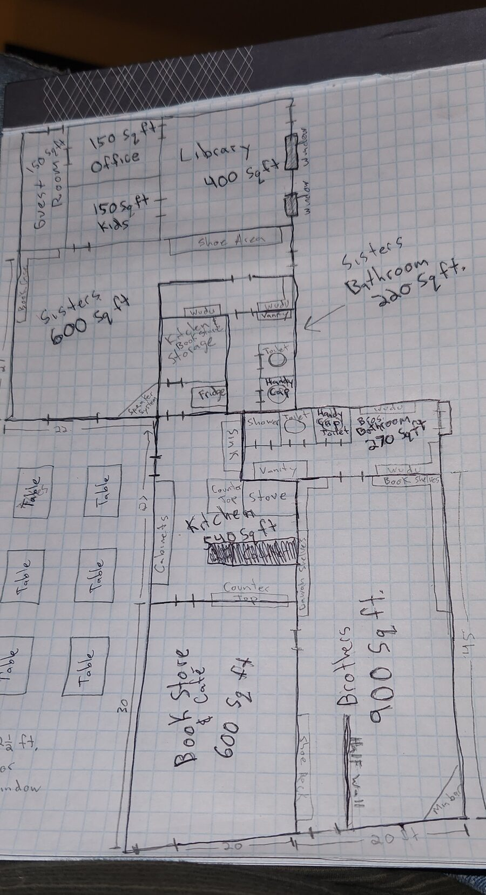
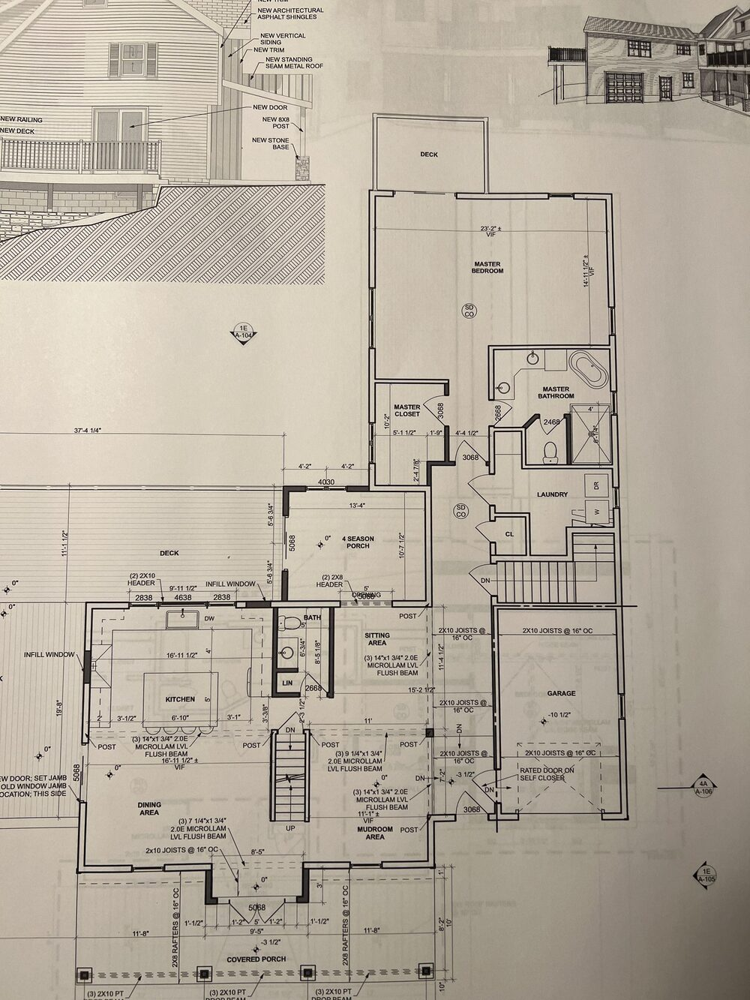
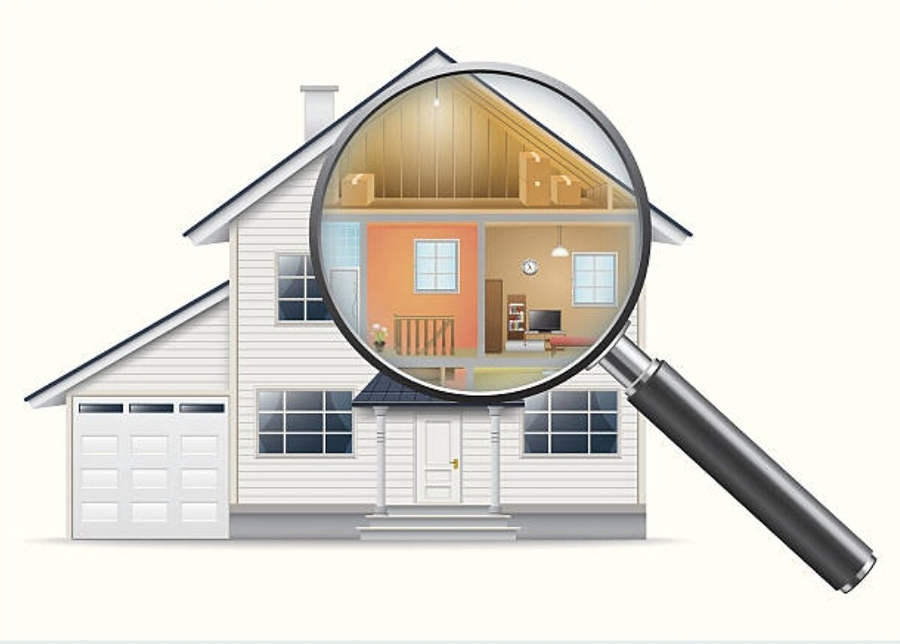
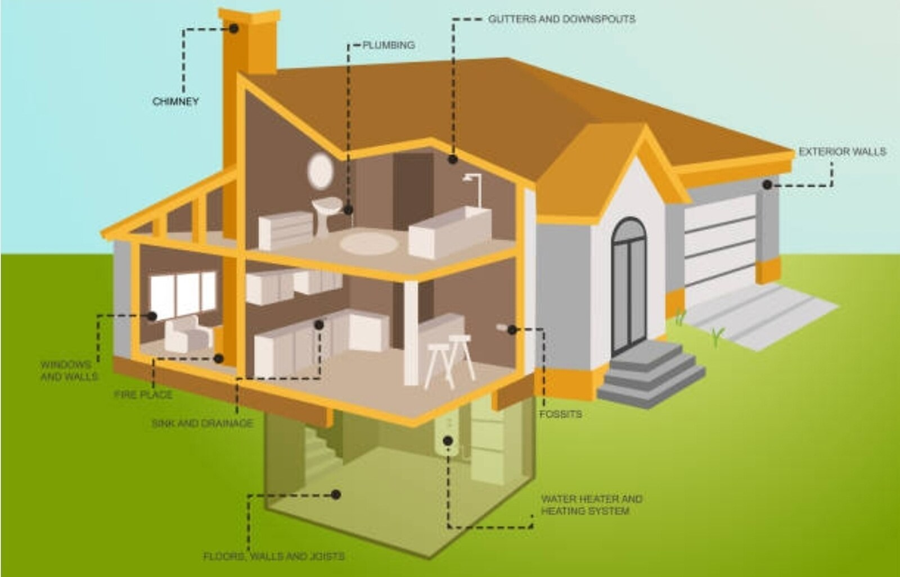

Full Home Remodeling & Additions
Whole-house remodels and room additions, planned to the last detail and built to Connecticut code from foundation to finish.
Request a ConsultationA remodel or addition touches every system in your home — framing, plumbing, electrical, structural. Getting it right starts long before demolition, with a design that's been thought through and a plan that's been engineered to hold up. At Restoricon, LLC, we build that foundation with you before a single wall comes down.
Two Ways to Start Your Design
Every homeowner comes to a remodel differently. Some have a rough idea in their head, or already sketched something on a legal pad. Others want a fully engineered plan from day one. We work with you either way.

Start With Your Own Sketch
If you already have a vision for your space, a hand-drawn layout on graph paper or notebook paper is a perfectly valid place to start. Our team takes those rough dimensions and room ideas and works with you to refine them into a buildable plan — measuring the space, confirming what's structurally possible, and translating your sketch into drawings our crews and inspectors can actually work from.

Or Let Our Architects & Engineers Draft It
Prefer to start from a clean slate, or need stamped drawings for permitting and structural work? We coordinate with licensed architects and structural engineers to produce full construction blueprints — delivered digitally or as full-size layout paper copies for your records — covering framing, elevations, dimensions, and every code detail your project requires.
How a Restoricon Remodel Comes Together
1. We Sit Down and Listen First
Before we talk about materials or timelines, our trained professionals sit down with you to understand what you're actually looking for — how you use your home, what isn't working, what the finished space needs to feel like, and what your budget and priorities are. A remodel that doesn't start with a real conversation almost never ends up matching what the homeowner had in mind.

2. Design & Drafting, Your Way
From there, your project moves into design — whether that means refining your own hand-drawn sketch or bringing in a licensed architect or structural engineer to produce full construction blueprints. Either path is reviewed against Connecticut building code before anything is finalized, so what gets designed is what can actually be permitted and built.
3. Permitting & Structural Planning
Additions and whole-house remodels almost always touch load-bearing walls, foundations, or systems that require permits and inspections. We handle the permitting process and coordinate engineering sign-off where required, so the project stays compliant and on schedule instead of getting held up by paperwork you didn't know you needed.
4. Vetted Trades, Built Around Your Life
Once construction starts, every subcontractor on site is licensed, insured, and vetted by us — protective containment measures keep dust and debris out of the rest of your home, and we structure the schedule around your household so you're never left guessing what stage the project is at. It's the same structured, documented process from the first sketch to the final walkthrough.

From Concept to Construction
Ready to Talk Through Your Remodel or Addition?
Bring a sketch, bring a Pinterest board, or bring nothing but an idea. Call (860) 337-1820, email contact@restoricon.com, or request a consultation below.
Request a Consultation